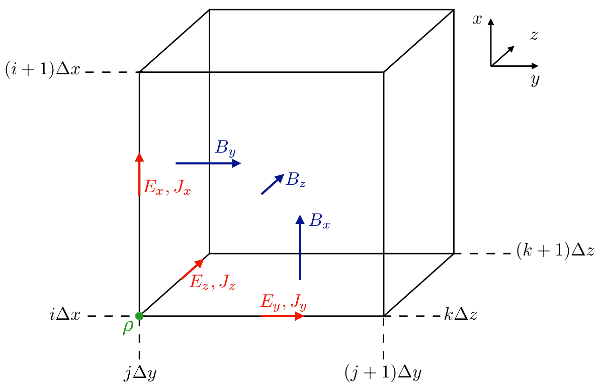

PIC algorithms¶
This document describes the theoretical basis with which Smilei simulates the behaviour of plasmas. Note that all quantities are expressed in terms of the reference units.
The Maxwell-Vlasov model¶
The kinetic description of a collisionless plasma relies on the so-called Vlasov-Maxwell system of equations. In this description, the different species of particles constituting the plasma are described by their respective distribution functions \(f_s(t,\mathbf{x},\mathbf{p})\), where \(s\) denotes a given species consisting of particles of charge \(q_s\), mass \(m_s\), and \(\mathbf{x}\) and \(\mathbf{p}\) denote the position and momentum of a phase-space element. The distribution \(f_s\) satisfies Vlasov’s equation:
where \(\gamma = \sqrt{1+\mathbf{p}^2/m_s^2}\) is the (relativistic) Lorentz factor,
is the Lorentz force acting on the particles. This force follows from the existence, in the plasma, of collective (macroscopic) electric [\(\mathbf{E}(t,\mathbf{x})\)] and magnetic [\(\mathbf{B}(t,\mathbf{x})\)] fields satisfying Maxwell’s equations:
The Vlasov-Maxwell system of equations (1)–(3) describes the self-consistent dynamics of the plasma which consistuents are subject to the Lorentz force, and in turn modify the collective electric and magnetic fields through their charge and current densities:
where we have introduced the velocity \(\mathbf{v} = \mathbf{p}/(m_s\,\gamma)\).
Quasi-particles¶
The Particle-In-Cell method owes its name to the discretization of the distribution function \(f_s\) as a sum of \(N_s\) quasi-particles (also referred to as super-particles or macro-particles):
where \(w_p\) is a quasi-particle weight, \(\mathbf{x}_p\) is its position, \(\mathbf{p}_p\) is its momentum, \(V_c\) is the hypervolume of the cell, \(S\) is the shape-function of all quasi-particles, and \(\delta\) is the Dirac distribution.
In PIC codes, Vlasov’s equation (1) is integrated along the continuous trajectories of these quasi-particles, while Maxwell’s equations (3) are solved on a discrete spatial grid, the spaces between consecutive grid points being referred to as cells. Injecting the discrete distribution function of Eq. (5) in Vlasov’s equation (1), multiplying the result by \(\mathbf{p}\) and integrating over all \(\mathbf{p}\) and over the volume of the quasi-particles, leads to the relativistic equations of motion of individual quasi-particles:
where \(r_s = q_s/m_s\) is the charge-over-mass ratio (for species \(s\)), \(\mathbf{u}_p = \mathbf{p}_p/m_s\) is the reduced momentum and \(\gamma_p=\sqrt{1+\mathbf{u}_p^2}\) is the Lorentz factor.
Time and space discretization¶
Maxwell’s equations are solved here using the Finite Difference Time Domain (FDTD) approach as well as refined methods based on this algorithm. In these methods, the electromagnetic fields are discretized onto a staggered grid, the so-called Yee-grid that allows for spatial-centering of the discretized curl operators in Maxwell’s equations. The following figure summarizes at which points of the Yee-grid are defined the electromagnetic fields as well as charge and density currents.
{kind=link}
Similarly, the time-centering of the time-derivative in Maxwell’s equations is ensured by considering the electric fields as defined at integer time-steps \((n)\) and magnetic fields at half-integer time-steps \((n+\tfrac{1}{2})\). Time-centering of the magnetic fields is however necessary for diagnostic purposes, and most importantly when computing the Lorentz force acting on the quasi-particles.
A leap-frog scheme is used to advance the particles in time, so that the particle positions and velocities are defined at integer \((n)\) and half-integer \((n-\tfrac{1}{2})\) time-steps, respectively.
Initialization of the simulation¶
The initialization of a PIC simulation is a three-step process consisting in
loading particles,
computing the initial total charge and current densities on the grid,
computing the initial electric and magnetic field at the grid points.
In Smilei, all three steps can be done either as a restart of a previous simulation (in which case the particles, charge and current densities and electromagnetic fields are directly copied from a file generated at the end of a previous simulation), or from a user-defined input file. In that case, the user defines the initial conditions of the particle, charge and current densities as well as the initial electromagnetic fields over the whole simulation domain.
In particular, the number density \(n_s(\mathbf{x})\), mean velocity \(\mathbf{v}_s(\mathbf{x})\) and temperature \(T_s(\mathbf{x})\) of all species \(s\) in a given cell (located at position \(\mathbf{x}\)) at time \(t=0\) have to be prescribed. The particle loading then consists in creating, in each cell, \(N_s\) particles with positions \(\mathbf{x}_p\) (either randomly chosen or regularly spaced) such that particles are uniformly distributed within the cell, and momentum \(\mathbf{p}_p\) randomly chosen such that the particle distribution follows a Maxwell-Jüttner distribution with mean-velocity \(\mathbf{v}_s(\mathbf{x})\) and temperature \(T_s(\mathbf{x})\).
In Smilei, a weight is assigned to each particle depending on the density associated to the cell it originates from:
This variable weighting is particularly beneficial when considering initially highly-inhomogeneous density distributions.
Once all particles in the simulation domain have been created, the total charge and current densities \(\rho(t=0,\mathbf{x})\) and \(\mathbf{J}(t=0,\mathbf{x})\) are computed on the grid using a simple projection technique:
where \(W_p = q_s w_p / V_c\).
Then, the initial electric fields are computed from \(\rho(t=0,\mathbf{x})\) by solving Poisson’s equation. In Smilei, this is done using the conjugate gradient method. This iterative method is particularly interesting as it is easily implemented on massively parallel computers and requires mainly local information exchange between adjacent processes.
External (divergence-free) electric and/or magnetic fields can then be added to the resulting electrostatic fields, provided they fullfill Maxwell’s equations (3), and in particular Gauss’ and Poisson’s.
Note that a relativistically drifting plasma needs special treatment.
The PIC loop¶
At the end of the initialization stage [time-step \((n=0)\)], all quasi-particles in the simulation have been loaded and the electromagnetic fields have been computed over the whole simulation grid. The PIC loop is then started over \(N\) time-steps each consisting in
interpolating the electromagnetic fields at the particle positions,
computing the new particle velocities and positions,
projecting the new charge and current densities on the grid,
computing the new electromagnetic fields on the grid.
In this section, we describe these four steps which advance the time from time-step \((n)\) to time-step \((n+1)\).
Field interpolation¶
At the beginning of time-step \((n)\), the particles velocity and position are known at time-step \((n-\tfrac{1}{2})\) and \((n)\), respectively. For each particle \(p\), the electromagnetic fields [at time-step \((n)\)] are computed at the particle position using a simple interpolation technique:
where we have used the time-centered magnetic fields \(\mathbf{B}^{(n)}=\tfrac{1}{2}[\mathbf{B}^{(n+1/2) } + \mathbf{B}^{(n-1/2)}]\).
Particle push¶
Knowing, for each quasi-particle, the electromagnetic fields at its position, the new particle momentum and position are computed using a (second order) leap-frog integrator.
In Smilei, different schemes have been implemented: the well-known Boris pusher both in the classical and relativistic form, the pusher developed by J.-L. Vay, and the pusher of Higuera and Cary.
All schemes compute the new particle momentum and position according to
where \(\Delta t\) denotes the duration of a time-step.
Current deposition¶
Charge deposition (i.e. charge and current density projection onto the grid) is then performed using the charge-conserving algorithm proposed by Esirkepov. The current densities along the dimensions of the grid (i.e., the \(x\)-direction for 1D3V simulations, both \(x\)- and \(y\)-directions for 2D3V simulations, and all three \(x\)-, \(y\)- and \(z\)-directions for 3D3V simulations) are computed from the charge flux through the cell borders (hence ensuring charge conservation) while the current densities along the other dimensions are performed using a simple projection.
To illustrate this point, we take the example of current deposition in a 2D3V simulation. The current densities in the \(x\)- and \(y\)-directions associated to a particle with charge \(q\) are computed as:
where \((W_x)^{(n+\tfrac{1}{2})}\) and \((W_y)^{(n+\tfrac{1}{2})}\) are quantities computed from the particle current and former positions \(x_p^{(n+1)}\) and \(x_p^{(n)}\), respectively, using the method developed by Esirkepov. The particle current in the \(z\)-direction (not a dimension of the grid) is, in this geometry, computed using a simple projection:
In all cases, the charge density deposited by the particle is obtained using the simple projection:
The total charge and current densities henceforth gather the contributions of all quasi-particles of all species. It is worth noting that, within a charge-conserving framework, charge densities are only projected on the grid for diagnostics purposes (as we will see in the next paragraph, it is not used to advance the electromagnetic fields).
Maxwell solvers¶
Now that the currents are known at time-step \(n+\tfrac{1}{2}\), the electromagnetic fields can be advanced solving Maxwell’s equations (3).
First, Maxwell-Ampère is solved, giving the advanced electric fields
Then, Maxwell-Faraday is computed, leading to the advanced magnetic fields
The discretization of the curl-operator is not detailed here.
It is worth noting that computing the two previous equations is sufficient to get a complete description of the new electromagnetic fields. Indeed, it can be shown that this conserves a divergence-free magnetic field if Gauss’ equation is satisfied at time \(t=0\). Similarly, Poisson’s equation is verified as long as it is satisfied at time \(t=0\), if the charge deposition algorithm fulfills the charge conservation equation:
(this motivated the use of Esirkepov’s projection scheme discussed in the previous paragraph).
Boundary conditions¶
After new quasi-particle positions and velocities have been computed, boundary conditions (BCs) are applied to each quasi-particle that may be located in a ghost cell, i.e. outside of the ‘real’ grid. Quasi-particle species may have a different BC for each boundary of the simulation box: the quasi-particles can either loop around the box (periodic), be stopped (momentum set to zero), suppressed (removed from memory), reflected (momentum and position follow specular reflection rules) or thermalized. In the latter case, the quasi-particle is set back inside the simulation box, and its new momentum is randomly sampled in a Maxwellian distribution with a given temperature and drift velocity, both specified by the user.
BCs are applied to the electromagnetic fields after Maxwell’s equations have been solved. Each boundary of the simulation box can feature a different BC. First, injecting/absorbing BCs inspired from the Silver-Müller BC are able to inject an electromagnetic wave (e.g. a laser) and/or to absorb outgoing electromagnetic waves. In contrast, the reflective electromagnetic BC will reflect any outgoing electromagnetic wave reaching the simulation boundary. Lastly, periodic BCs correspond to applying the fields from the opposite boundary.
Multi-pass filtering of the current densities¶
A multi-pass filter on the current densities is available in Smilei. The user can choose a simple 3-points FIR binomial filter, which implementation follows that presented by Vay et al. (2011), or a N-point kernel FIR filter. Each pass consists in a N-point spatial averaging (in one or all spatial dimensions) of the current densities, so that the filtered current density (here defined at location i on a one-dimensional grid) is recomputed as:
In particular, the binomial filter uses a kernel K = [0.25,0.5,0.25] resulting in
A user-provided FIR kernel must be of length N with an odd number of coefficients (symmetrical to avoid phase effects). The number of ghost cells must be greater than (N-1)/2. Moreover, the sum of the kernel’s coefficients must be equal to one. This online tool is handy to design a custom filter.
Current filtering, if requested by the user, is applied before solving Maxwell’s equation, and the number of passes is an input parameter defined by the user.
Friedman filter on the electric field¶
A method for temporal filtering of the electric field is also available in Smilei. It is the so-called Friedman filter detailed in Greenwood et al. (2004). This method consists in computing the filtered electric field at time-step \(n\):
where:
and \(\theta \in [0,1[\) is an input parameter defined by the user. Note that the filtered field \(E_f\) is not used to push particles, but is used when solving the Maxwell-Faraday equation. Also note that, as underlined in Greenwood et al. (2004), using this particular filter modifies the CFL condition of the Maxwell solver. A simple trick to ensure that this condition is still verified is to use (for \(\Delta x = \Delta y = \Delta z\)) the magic time-step \(\Delta t = \Delta x/2\) whenever the Friedman filter is employed.
Both filters on the currents and electric fields can be used together or separately. They can be used, e.g., to mitigate the numerical Cherenkov instability that plagues PIC simulations dealing with relativistically drifting flows. An exemple of their use to mitigate this effect is highlighted in the work by Plotnikov et al. (2017).
B-translated interpolation scheme version 3¶
This interpolation scheme, called B-TIS3 and described in detail in P.-L. Bourgeois, X. Davoine (2023), mitigates some numerical artifacts that arise when macro-particles at relativistic velocities are present in the simulation:
inaccurate \(\mathbf{B}\) interpolation due to the time and space staggering of \(\mathbf{E}\) and \(\mathbf{B}\) in the Yee grid. The associated errors are particularly detrimental for the accuracy of simulations with relativistic particles;
Numerical Cherenkov radiation (see e.g. R. Lehe et al. (2013)) that arises with the interaction of relativistic particles and the numerical dispersion of Finite Difference methods used to solve Maxwell’s Equations. As explained in the same reference, this numerical artefact can increase the divergence and emittance of relativistic particle beams.
The B-TIS3 interpolation scheme can give a more accurate computation of the force acting on particles in presence of
fields that move at speed close to the speed of light in the x direction, which is the underlying hypothesis where this scheme can be used safely.
This hypothesis is also partially satisfied by Numerical Cherenkov radiation, as shown in P.-L. Bourgeois, X. Davoine (2020).
Please note that this scheme does not remove this numerical artifact (which will remain visible e.g. in Field diagnostics), but it mitigates its effects on the macro-particles. Instead, the effects of this interpolation scheme on the force acting on the macro-particles can be seen also through Probes showing the associated B-TIS3 fields. This because Probes act as macro-particles interpolating the fields from the grid as if they were plasma macro-particles.
As described in P.-L. Bourgeois, X. Davoine (2023), the correction given by the B-TIS3 scheme on force interpolation (compared to the usual interpolation of the magnetic field) is effective only when the normalized integration timestep \(\Delta t\) is near to the value \(\Delta x\) of the grid cell size along the x direction.
As explained before, in a typical PIC code using a Yee scheme to solve Maxwell’s equations, the magnetic field interpolated on the macro-particles’ positions is often linearly interpolated in time. For example, for the \(B_z\) component of the magnetic field:
The B-TIS3 scheme tries to reduce the errors associated to this temporal interpolation and to the staggering of the electric and magnetic fields in the Yee cell, interpolating a magnetic field defined at the same x spatial indices of the electric field when necessary.
For example, in the y component of the Lorentz force, the electric field component \(E_y\) is defined on the primal grid in the x direction, but \(B_z\) is defined on the dual grid in the x direction.
Thus, in the B-TIS3 scheme a translated interpolation scheme is used for \(B_z\) in the Lorentz force:
As explained in the B-TIS3 reference, for \(\mathbf{B}\) fields moving near to the speed of light in the x direction and for \(c\Delta t\) near to the value \(\Delta x\), this choice is more accurate than the usual linear temporal intepolation of the magnetic fields.
Note that in the x component of the Lorentz force the electric field \(E_x\) is defined on the dual grid in the x direction, thus the usual Yee-centered and linearly interpolated \(B_z\) (also defined on the dual grid in the x direction) is maintained.